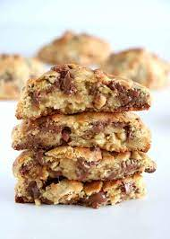

Cookie

Chewy, Soft and Chocolate Indulged Cookie Recipe
First off, these cookies are MASSIVE. They’re a whopping 6 ounces EACH and fit in the palm of your hand. The recipe yields 8 six-ounce cookies and enough dough leftover for a smaller 2-3 oz cookie. You can make these smaller, of course, but please adjust the baking time for less time!
Ingredients:
- 1 cup COLD unsalted butter cut into small cubes
- 3/4 cup light brown sugar
- 1/2 cup granulated white sugar
- 2 large eggs
- 2 tsp vanilla extract
- 1 tsp cornstarch
- 1 tsp baking soda
- 1/2 tsp salt
- 1 cup cake flour
- 1¾ cups all-purpose flour
- 2 cups semi-sweet chocolate chips
- 2 cups chopped walnuts
Instructions:
- Preheat oven to 410° degrees F. Line 2 baking sheets with parchment paper or silicone liners; set aside.
- In the bowl of a stand mixer, cream together the butter and both sugars with the paddle attachment on low speed for 30 seconds. Increase speed to medium and beat for another 30 seconds, then increase to high speed for a last 30 seconds. Mixture should be light and fluffy. Beat in the eggs, one at a time, scraping down the sides of the bowl with a spatula as needed, followed by the vanilla.
- Add in the cornstarch, baking soda, salt, cake flour and all-purpose flour and mix on low speed until just incorporated. Add in the chocolate chips and chopped walnuts and mix until just combined. Refrigerate the dough for 15 minutes.
- Using a digital kitchen scale for accuracy, measure out a rough 6 ounce ball of dough, shaping it roughly and place on the baking sheet. You do not want the dough ball to be smooth and compacted, just barely formed into a rough ball shape. Stagger 3 more dough balls on one baking sheet, spacing about 3" apart. (There should be 4 dough balls on one baking sheet).
- Bake for 10-13 minutes, one sheet at a time in the middle rack of the oven. Cookies should look cooked and be dry and have a duller finish on the outside while still looking soft and underdone on the inside. Start checking at the 10-minute mark as it is important not to over-bake these. Remember, cookies will continue to finish cooking on the baking sheet after being removed from the oven.
- Allow cookies to cool completely on the baking sheet, about 30 minutes, before moving to a wire rack or storing. Cookies are very delicate just after baking so it is imperative they are not disturbed.